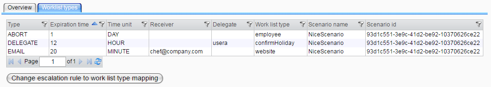

Escalation Rules

Topic content
If you select the "Escalation Rules" menu entry, a table with all currently existing escalation rules is displayed as the following picture shows.

Table with escalation rules
Right clicking a table row opens the context menu. You can edit or delete an item by selecting the corresponding menu entry. If you want to delete more than one entry, mark all entries you want to delete, open the context menu and select delete. If you want to create a new rule, click on the create button. The dialog from the picture above will be displayed then.

Escalation rule creation dialog
Depending on the type you select for the rule you can choose a delegate or a E-Mail address or nothing.
If you want to see the escalation rules together with their registered types, click on the "Worklist Types" tab. Here, all escalation rules are shown with the types they are registered for, so they can appear more than once. If you are interested in only one type, use the filter option of the table. The shown table has also a context menu with the options "edit" and "delete". Deleting an escalation rule here means that it is unregistered for the type. It is still available for all the other types that reference it and for future references. On the contrary, editing a rule here takes effect for all other types as well. So be careful.

Table with escalation rules for one type
If you want to add an escalation rule to a work list type, use the button on the bottom of the page. A dialog like in the next picture will be shown then.
Dialog for adding an escalation rule to a work list type
Registering a rule for a type means that if an item of that type is not completed after the configured time, the action that corresponds to the escalation rule will be executed.
In the dialog, the right side shows all types for which the escalation rule selected above is registered. On the left side, the types that do not have the escalation rule registered are shown. Move a type name from left to right in order to register it or move it from right to left for deleting it. If you select a new escalation rule, a dialog will ask you if you want to save your changes (in the case you made changes).